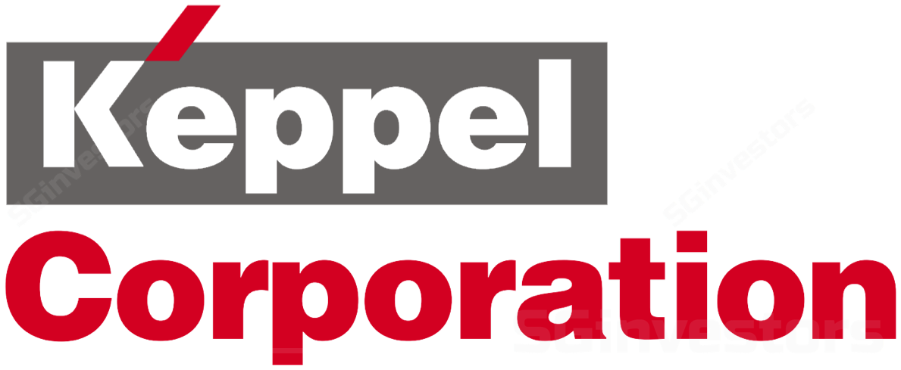

100+ years of leadership built with the world's most demanding organisations

Fractional CFO · Strategic Advisory · Cross-Border Structuring
Connecting strategy to execution — senior finance and business leadership for teams navigating growth, complexity, and change across Asia-Pacific.
100+ years of leadership built with the world's most demanding organisations

The gaps that don’t close on their own. These are the moments that bring leadership teams to us — for senior finance leadership beyond reporting and analysis.

Reporting is heavy. Insight is thin.
Lean reporting
clearer insight · key drivers · change · what matters most
Decision support is limited.
Strategic decision support
clarity · forward-looking · scenarios · trade-offs · priorities
Teams are not aligned around one view.
One shared fact base
aligned assumptions · shared priorities · faster decisions
Priorities are clear. Execution is uneven.
Performance cadence
operating rhythm · follow-through · accountability · results
Cross-border complexity is increasing.
Structuring and governance
entity structure · governance · cross-border readiness
A critical transition is underway.
Leadership through change
integration · restructuring · complexity · continuity
These gaps rarely close through isolated fixes.
Strong performance requires a connected operating rhythm
— one that aligns priorities, supports follow-through, and improves delivery.
Our proprietary framework connects planning, execution, measurement, and delivery in one continuous, adaptive cycle. Four pillars. One rhythm.
We don’t just place a person. We embed a system.
Every function, every market, every decision anchored to one fact base. No silos. No conflicting numbers. Aligning interests and priorities, enabling faster and better decisions.
Planning, execution, measurement, and course-correction run as one continuous cycle — not separate workstreams handed off between teams. Strategy flows into operations. Results flow back into planning.

Forward-looking by design. The cadence surfaces emerging patterns, models scenarios, and flags risks and opportunities early. Decisions are made on trajectory — not just on position.
Built to evolve as markets shift and complexity grows — a system that strengthens with each cycle.
Each cycle strengthens the next — building the operating rhythm that turns strategy into measurable delivery.
Senior leadership support — from a focused engagement to an ongoing partnership. Built to grow with you as priorities evolve.
Retained Model (Core)
Ongoing access to senior finance and business leadership without building a full in-house senior layer. We work alongside your leadership team on the priorities that matter most.
Focused Engagements
Designed around a defined business need — clear scope, practical output, and senior leadership throughout. No junior teams.
Examples:
Regional Operations
For businesses establishing or running regional operations, we design the operating and financial model — aligned to group strategy and fully compliant. Focused engagement, or managed by us.
Illustrative Scope
Each engagement — retained or sprint — is tailored to your specific context.
These areas illustrate the depth and range we typically draw on: